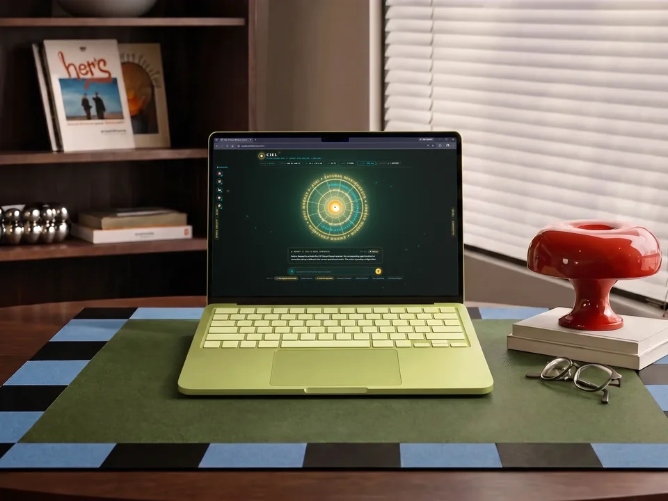

Flagship
Manas: Ciel
My work was spread across the terminal, Discord, notes and chat tabs, and switching between them by hand broke my focus.
A bilingual voice assistant for my dev workstation: live weather, web search.
Time to first audio 4.60 1.41 s p50, N=10
- Python 3.11 (aiohttp)
- Groq Whisper Turbo
- Edge-TTS
- FFmpeg DSP
- Vanilla JS/CSS
Doesn’t do: Runs on my own PC only; it isn't a hosted assistant.